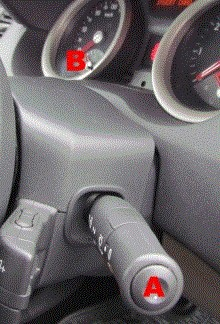

Resetting service message
This function is used to manually turn off the service indicator.
Procedure:
Engage a gear or select "D".
Turn on the ignition. For cars with key card, press in and hold in the start/stop button for approx. 10 seconds.
Press repeatedly on button A until the message "Driving distance before service" or the wrench symbol is shown on the odometer's display.
Hold in button B for approx. 10 seconds until the display has flashed 8 times.
Let up button B when the new service interval is shown.
Turn off the ignition. For cars with key card, press in the start/stop button.
